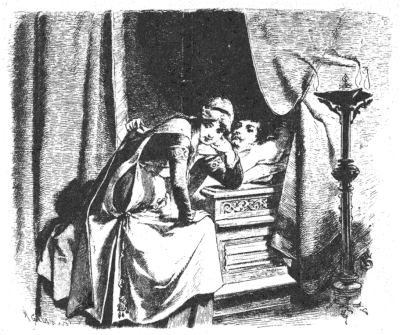

なぞ
グリム Grimm
矢崎源九郎訳
むかし、あるところに、ひとりの王子がおりました。王子は世のなかを歩きまわってみたくなりましたので、忠義な家来をひとりだけつれてでかけました。
ある日のこと、王子は、とある森のなかにはいりこみました。そのうちに、日がくれてきました。けれども、まだ宿屋が見つかりません。それで王子は、今夜はどこで夜をあかしたものだろうかと、とほうにくれてしまいました。
と、そのとき、ひとりのむすめが小さい家のほうへ歩いていくのが、目にとまりました。そこで、近よってみますと、それはわかいきれいなむすめでした。王子はむすめに声をかけて、いいました。
「むすめさん、今夜ひと晩、わたしと家来とをとめてもらえませんかね。」
「それはまあ、おとめすることはできますけど。」
と、むすめはかなしげな声でいいました。
「おすすめはいたしませんわ。おはいりにならないほうがようございます。」
「どうしていけないのですか。」
と、王子がたずねました。
むすめはため息をついて、こたえました。
「じつは、あたしのまま母はわるい術をつかいますし、それに、よそのかたにはしんせつにしないんですの。」
これをきいて、王子は魔女の家へきたことを知りました。けれども、もうまっくらで、これいじょうさきへいくことはできません。それに、べつにこわいとも思いませんでしたので、王子はなかへはいりました。
ばあさんは、炉ばたのひじかけいすにこしかけていましたが、赤い目で旅の人たちをじろっとながめました。そして、
「よくきたね、こしをおろして、ゆっくりやすむがいい。」
と、しゃがれ声でいいました。けれども、そのようすはいかにもしんせつそうでした。
ばあさんは、ぷうぷう炭をふいて、小さなふかいなべをかけ、なにかを煮はじめました。それを見ますと、むすめはふたりに気をつけるように注意して、
「まま母はわるい飲みものをつくっているんですから、どんなものでものんだり、食べたりしてはいけませんよ。」
と、もうしました。
ふたりは、あけがたまでぐっすりねむりました。
ふたりはでかけるしたくをすっかりととのえて、王子ははやくも馬にのりました。そのとき、ばあさんがいいました。
「ちょいとお待ち。でかけるまえに、おわかれの飲みものをあげたいからね。」
ばあさんがその飲みものをとりにいっているあいだに、王子はでかけてしまいました。家来のほうは、馬のくらをしっかりしめなければなりませんでしたので、ひとりだけあとにのこっていました。すると、そこへわるい魔女が飲みものをもって、やってきました。
「これを、おまえさんのご主人にもっていってあげておくれ。」
と、魔女はいいました。
ところがそのとたんに、コップがわれて、なかの毒が馬にはねかかりました。と、どうでしょう、それはものすごい毒だったものですから、たちまち、馬はその場にたおれて、死んでしまいました。
家来は主人のあとを追っていって、このできごとをのこらずものがたりました。そして、くらをこのまますてていくのもおしいからといって、ふたたびくらをとりにひきかえしました。ところが、死んだ馬のところまできてみますと、もう、カラスが一羽馬の上にとまって、死んだ馬をくっているのです。
「きょうのうちに、なにかもっといいことがないともいえない。」
家来はこういって、そのカラスを殺して、もっていきました。
それから、ふたりは一日じゅう森のなかを歩きつづけましたが、それでも森のそとへでることはできませんでした。やがて、日のくれかかるころ、ふたりはようやく一軒の宿屋を見つけて、なかへはいりました。
家来は宿屋の亭主にさっきのカラスをわたして、晩のごちそうに料理するようにいいました。
ところが、ふたりは人殺しの巣のなかにとびこんだのです。ですから、くらやみにまぎれて、十二人の人殺しどもがやってきました。そいつらはこの旅の客を殺して、もっているものをうばいとろうというのです。けれども、しごとにかかるまえに、人殺しどもは、まず食卓につきました。宿屋の亭主もあの魔女も、そのなかまにくわわりました。そしてみんなで、さっきのカラスの肉をきざみこんでいれてあるスープをひとさらずつのみました。ところが、このカラスの肉には、馬の肉の毒がつたわっていたからたまりません。ひと口ふた口のみこむかのみこまないうちに、みんなはその場にたおれて死んでしまいました。
生きのこったのはただひとり、亭主のむすめだけでした。このむすめは心のすなおな子で、こんなひどいことには、なんのかかりあいもなかったのです。むすめは旅のふたりに、扉という扉をのこらずあけて、なかにつみあげてあるたくさんの宝ものを見せました。けれども王子は、
「これは、おまえがみんなとっておきなさい。わたしはなにもいらないから。」
と、いって、家来といっしょにまた馬にのっていきました。
ふたりは長いこと歩きまわったのち、とある町へきました。その町には、美しいけれども、たいそう思いあがったお姫さまが住んでいました。お姫さまは、もしじぶんにとけないようななぞをだすものがあったら、その人をじぶんのおむこさんにしよう、そのかわり、もしじぶんがそのなぞをといたら、その男はいやでも首を切られなければならないというおふれをだしていたのでした。
お姫さまは三日のあいだ考えることになっていたのですが、たいへんかしこいひとでしたので、だされたなぞは、いつもきめられた日のこないうちにちゃんとといてしまいました。
王子がこの町へついたときには、すでに九人のものが、こんなふうにして命をおとしていたのでした。だれもかれもが、お姫さまのあまりの美しさに目がくらんでしまって、じぶんの命をかけてもいいと思ったのです。
王子はお姫さまのまえにでて、なぞをだして、いいました。
「ひとりがひとりも殺さないのに、十二人殺したものは、なんでしょう。」
お姫さまには、こればかりはなんだかわかりませんでした。いくら頭をひねって考えてみても、見当もつきません。なぞの本もいくさつかひらいてみましたが、本にも書いてはありません。つまり、お姫さまの知恵がたねぎれになってしまったのです。
お姫さまはもうどうしていいかわからなくなりましたので、侍女にいいつけて、王子の寝室にしのびこませました。侍女は、そこで王子が夢を見て、なにかいうのをきいてくるようにいいつかったのです。なぜって、お姫さまは、ひょっとしたら、王子がねごとをいって、なぞのことでもいいあかしはしないだろうかと考えたのです。
けれども、りこうな家来は、主人のかわりにじぶんがベッドのなかにはいってねました。そして、侍女がそばまできますと、侍女が身をつつんでいたマントをいきなりはぎとって、この女をむちでうって、追いだしてしまいました。
二日めの晩には、お姫さまは侍女をやって、うまくきけるかどうか、とにかくやってみるようにいいつけました。けれども、家来はこんどもまたマントをはぎとって、やっぱり侍女をむちでうって、追いだしてしまいました。
そこで、王子は、三日めの晩はだいじょうぶだろうと思って、じぶんのベッドにねていました。ところがこんどは、お姫さまがじぶんでやってきました。みれば、お姫さまはうすネズミ色のマントを身にまとっています。そして、お姫さまは王子のそばにこしかけました。

お姫さまは、王子がねむって夢を見ているのだと思いましたので、王子に話しかけました。なぜって、こうすれば、よくみんながするように、王子も夢を見ながらへんじをしてくれはしないかと、ひそかにねがっていたからです。
ところが、王子は目がさめていたのです。そして、なにもかもこころえて、ちゃんときいていたのでした。
お姫さまが、
「ひとりがひとりも殺さなかったのは、なんですか？」
と、たずねました。
すると、王子がこたえました。
「毒がかかって死んだ馬を、食べたために死んだカラスだよ。」
お姫さまはさらにたずねました。
「それで、十二人を殺したのはなんですか？」
「それは、そのカラスを食べて、そのために死んだ十二人の人殺しのことだよ。」
お姫さまはなぞのこたえがわかりますと、そっとぬけだそうとしました。ところが、王子がお姫さまのマントをしっかりおさえていたものですから、お姫さまはしかたなく、それをそのままおいていかなければなりませんでした。
あくる朝、お姫さまはなぞがとけたとおふれをだしました。そして、十二人の裁判官をよびだして、そのまえでなぞをといてみせました。
すると、なぞをだした王子が、じぶんのいうこともきいていただきたい、とねがいでました。
「お姫さまは、ゆうべわたくしのところへしのんでこられて、わたくしからのこらずきいてしまわれたのです。さもなければ、とけるはずがございません。」
と、いいました。
それをきいて、裁判官は口ぐちにいいました。
「では、その証拠をもってきなさい。」
そこで、家来がマントを三着もってきました。裁判官たちはお姫さまがいつもきている、うすネズミ色のマントを見ますと、
「このマントに金糸、銀糸のぬいとりをおさせなさいませ。そうすれば、お姫さまのご婚礼のマントになりましょう。」
と、いいました。
底本：「グリム童話集（1）」偕成社文庫、偕成社
1980（昭和55）年6月1刷
2009（平成21）年6月49刷
入力：sogo
校正：チエコ
2020年12月27日作成
青空文庫作成ファイル：
このファイルは、インターネットの図書館、青空文庫（https://www.aozora.gr.jp/）で作られました。入力、校正、制作にあたったのは、ボランティアの皆さんです。
●表記について
- このファイルは W3C 勧告 XHTML1.1 にそった形式で作成されています。